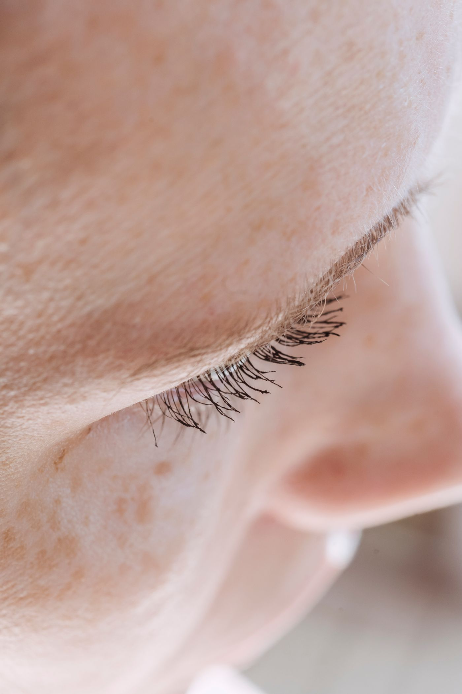
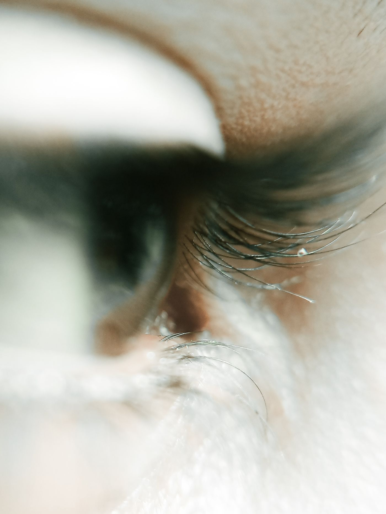

Olhar de
"acordei assim".Sem rímel, sem retoque, sem segredo.
(a parte do "assim" é com a gente)


Cílio e sobrancelha pensados pro SEU rosto — não um molde igual pra todo mundo. O resultado tem que parecer seu. Só que melhor descansado.
A gente ouve isso o tempo todo. E concorda: olhar pesado, postiço, "cílio de boneca" — não é o nosso trabalho.
Aqui a técnica é escolhida pelo seu olho e pela força do seu fio natural. Discreto se você quer discreto. Marcante se a ocasião pede. Você decide — a gente entrega no ponto.
Essa é a pergunta de quem mora — e de quem vem passar o verão — no Guarujá.
A gente é studio DAQUI. Pensa o seu olhar pra água salgada, sol e cloro de Guarujá. Tem técnica feita pra entrar no mar e sair com o olhar marcado (oi, lash lifting). E a gente te ensina o pós-praia certo pra durar mais.
Acabou a história de ir pra praia sem máscara e ainda assim ter olhar.
Você chega com o seu rosto e a sua rotina — a gente lê o seu olho e diz a técnica certa pra você (e pra praia que você frequenta).
Teste de sensibilidade incluído antes de começar. Resultados podem variar.
Manda um "oi" no WhatsApp e a gente já vê a técnica certa pra você. A agenda de verão enche rápido — garanta o seu horário.
Chamar no WhatsApp [número/WhatsApp]